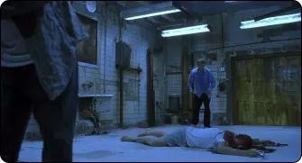
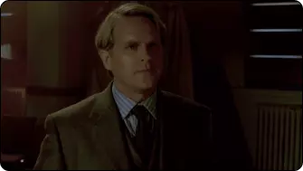
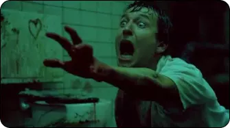
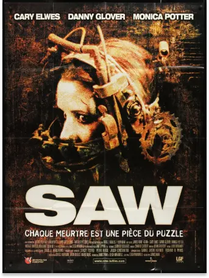
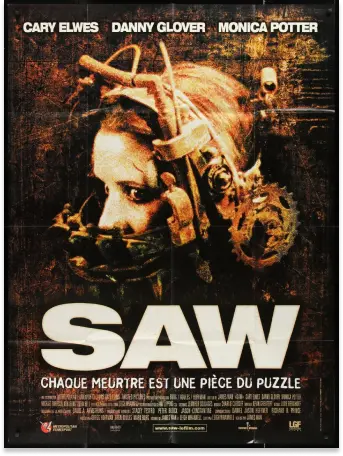

Since its first release in 2004, the film "Saw" has left an indelible mark on the world of horror cinema.
Directed by
James Wan and written by Leigh Whannell, this film became the first installment in a legendary franchise,
known for its
unique blend of visceral horror, raw violence, twisting puzzles and deep exploration of the human psyche .
A NEVER ENDING NIGHTMARE
The horror aspect of “Saw” is a real tour de force. From the first minutes, spectators are plunged into an
endless
nightmare. The torture scenes, cruelly imagined by the serial killer Jigsaw, defy the imagination and
provoke a visceral
reaction in the audience.
Amanda, in the bear trap
AN OPPRESSIVE CLOSED DOOR
The atmosphere of the film is stifling, and the action takes place mainly in a dilapidated, dark and filthy
bathroom,
where Jigsaw's victims wake up chained and disoriented with little hope of escape.

Adam & Lawrence Gordon, locked in a bathroom
A MATTER OF LIFE OR A DEATH
Jigsaw, the mastermind behind the traps, does not kill his victims directly. Instead, he forces them to make
terrifying
decisions for their own survival showing the human being's capacity to make desperate choices when their
lives are at
stake.

Lawrence Gordon, before being captured by Jigsaw
Flashbacks and revelations about Jigsaw's past add a deep psychological dimension to the film, prompting
viewers to
think about the nature of good and evil.
AN INDELIBILE MARK IN THE HISTORY OF THE CINEMA
“Saw” managed to captivate horror fans with its unique blend of brutal violence, oppressive atmosphere and
exploration
of the darkest corners of the human psyche. The film spawned a series of sequels that continued to explore
these themes,
while leaving an indelible mark on horror cinema history.

Final scene in the film
For those looking for a cinematic experience that will make them shiver and think, “Saw” remains a must-see.
But be
careful, once you dive into the world of Jigsaw, there is no going back.
 
